Point the camera at the spouts and cup, press Arm before you start the pump, and hold steady for a second while it learns the scene. The streams are found on their own; hand-held is fine.
0.0
Idle
colour of each stream over the shot (0 = first liquid)lines = paleness per stream · green = target
Shot report
Reference photos: what shots usually look like
A good double-spout shot over time
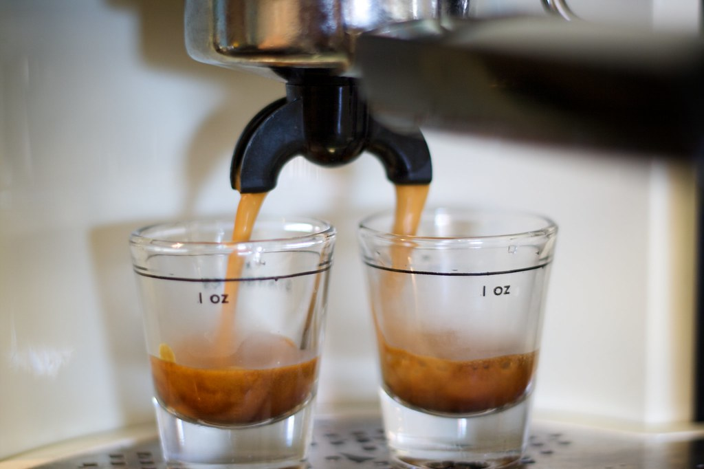
Early: thick, dark-to-caramel streamsDavid Joyce · CC BY-SA 2.0
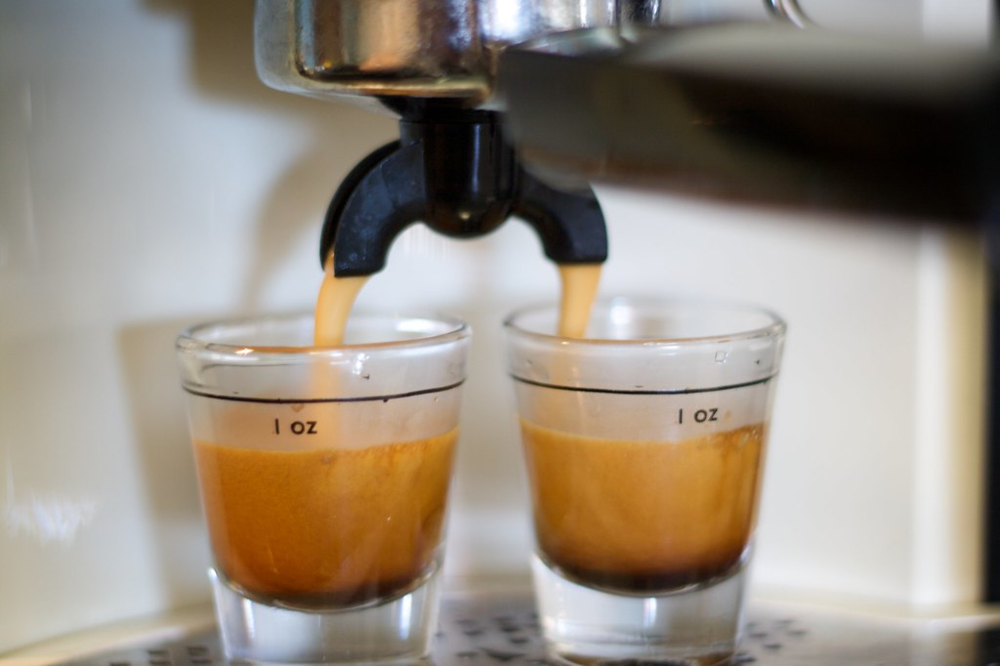
Middle: caramel, lightening graduallyDavid Joyce · CC BY-SA 2.0
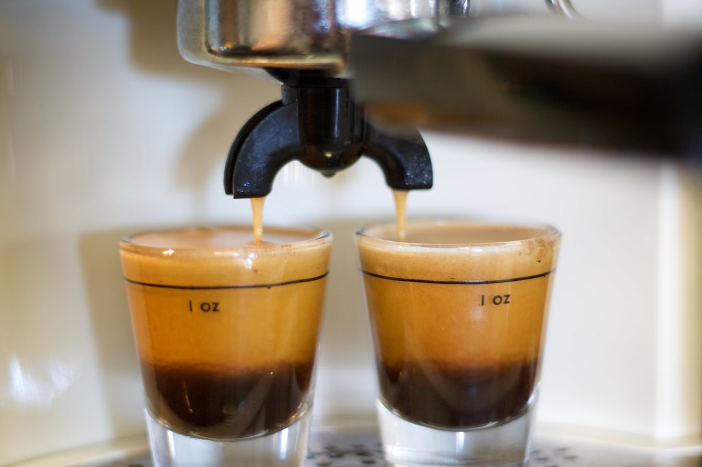
Late: thin and pale (blonding), near the endDavid Joyce · CC BY-SA 2.0
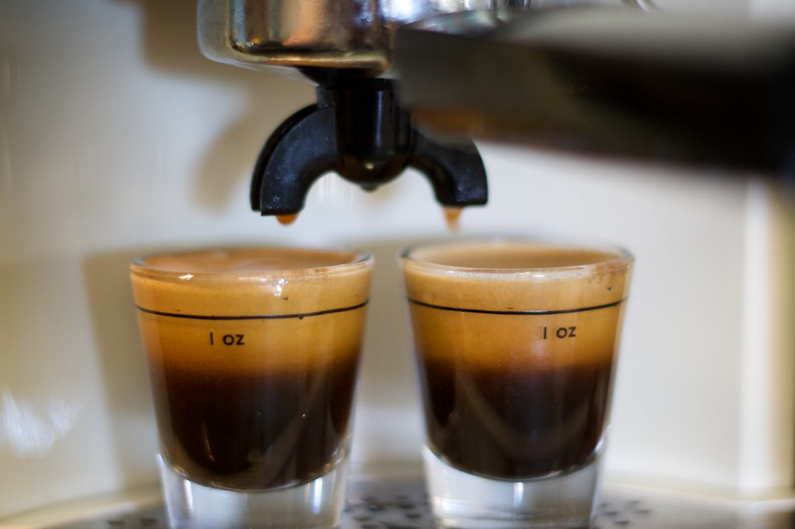
End: dripsDavid Joyce · CC BY-SA 2.0
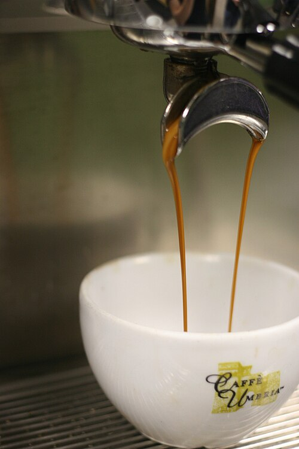
"Mouse tails": thin, steady, carameljourneys · CC BY 2.0
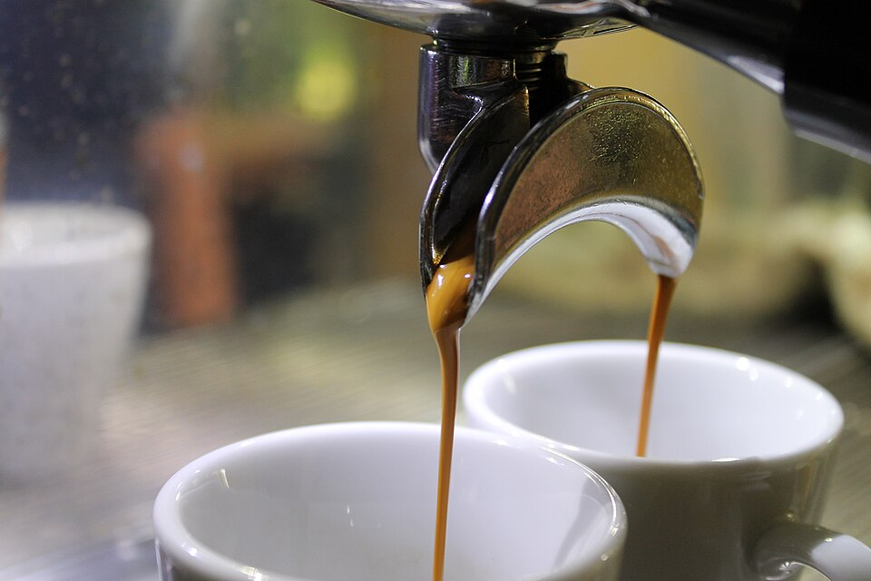
Dark, syrupy early streamsElmerGuevara · CC BY-SA 3.0
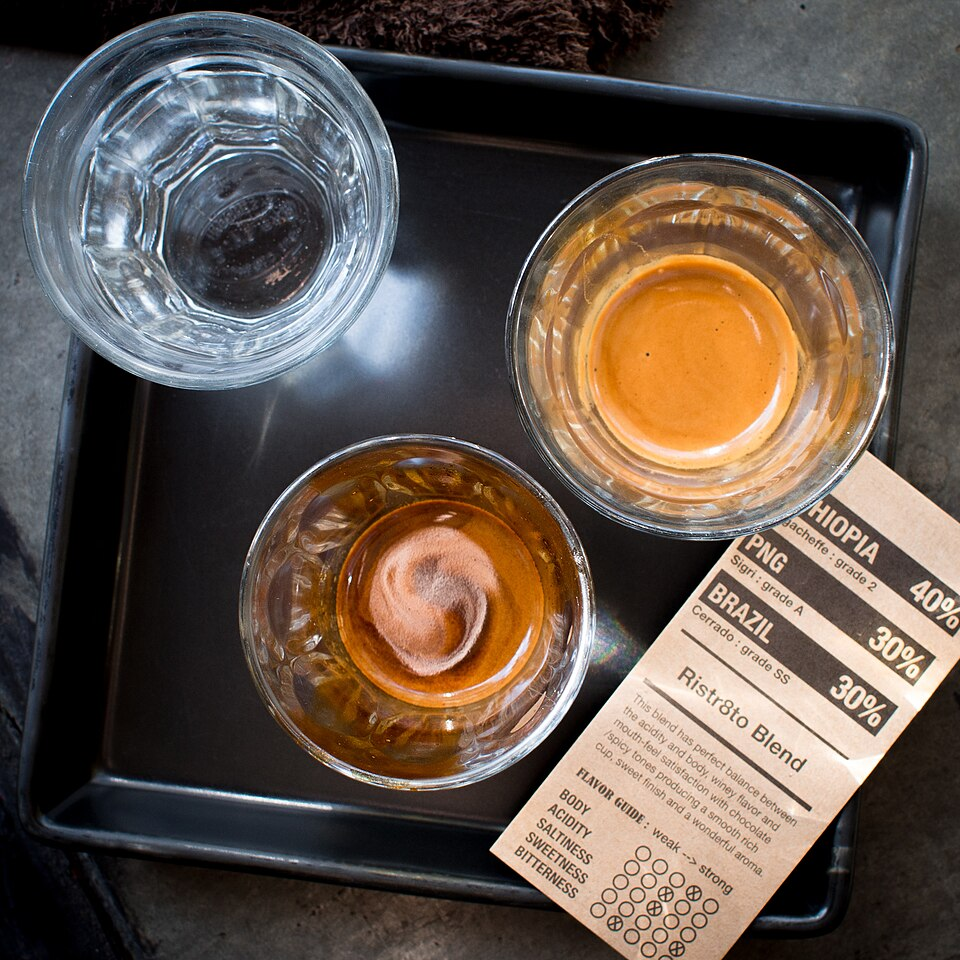
First half (dark, rich) vs second half (pale) of one shotTakeaway · CC BY-SA 3.0
Problems
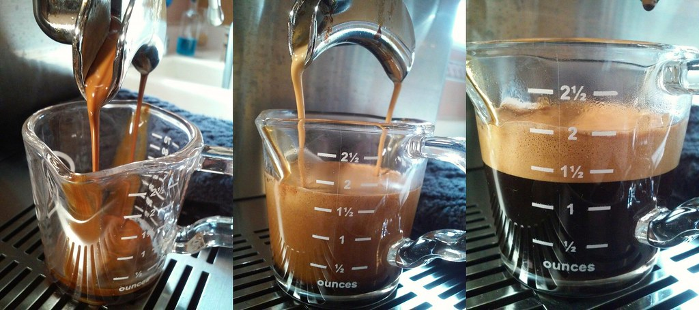
Running fast: gushing, then pale early (the author’s caption)christopher cornelius · CC BY 2.0
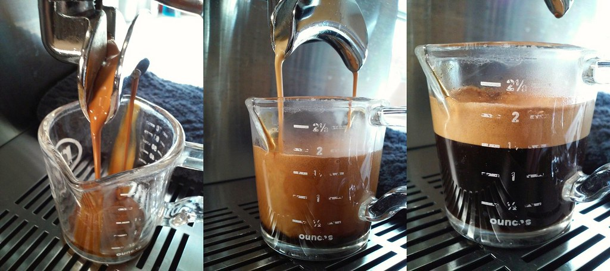
Spouts running differentlychristopher cornelius · CC BY 2.0
Bottomless portafilter
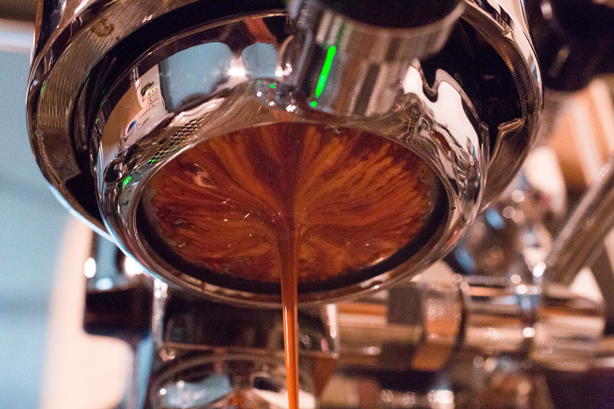
Even cone, centred streamScott Schiller · CC BY-SA 2.0
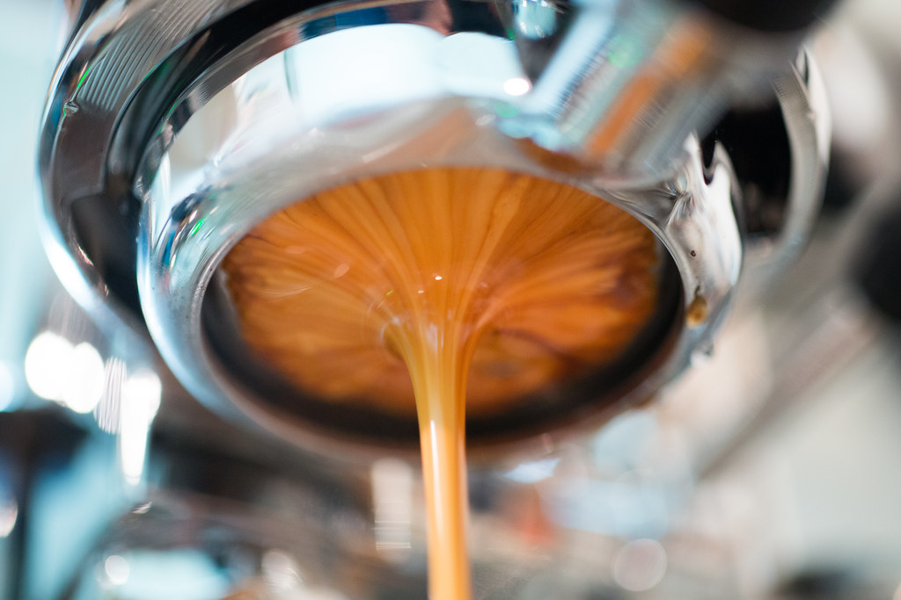
The same, gone pale late in the shotScott Schiller · CC BY-SA 2.0
No openly licensed photos were found for a choked shot or for bottomless spurting. All photos are openly licensed; full credits in img/reference/CREDITS.md.